Ability Tree Strategies General Ability Branch
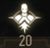 General (Ability Branch: 20 Points)
{kind=link}
The General Abilities branch does not focus on any given aspect of a Witcher’s skills. However, the abilities found here can influence your overall archetype. You can purchase any of the 20 abilities here at any time you like (none need to be “unlocked”), and each one costs only a single point (none of them have “Levels”). However, unlike groups of Combat, Signs, or Alchemy abilities, these do not “stack” together with Mutagens, lessening their usefulness. As you progress, you may find no more than three of these abilities are needed when perfecting a character build.
{kind=link}
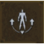 Metabolism Boosts
{kind=link}
If available, Adrenaline Points will be consumed to reduce the Toxicity cost of drinking potions by 33% per point. Does not affect mutagen decoctions.
| Points in branch needed to unlock: 0 |
Notes: This can be helpful if you haven’t bothered to place many points into Alchemy to build up your tolerance, or you want to drink more Potions as combat progresses. The Adrenaline Point deduction can be worrying if you’re using other abilities (like sword attacks!) that require Adrenaline too, so check the benefits of swigging multiple potions outweigh your AP drain. Beware of using this with certain abilities (such as Endure Pain) that actually require a Toxicity level, as this makes acquiring a high Toxicity more difficult!
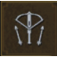 Trick Shot
{kind=link}
You can shoot one additional bolt before you must reload.
| Points in branch needed to unlock: 0 |
Notes: If you’re finding it troublesome to fiddle with your crossbow string every so often, and you’re focusing on an archetype that is mainly planning on dropping every foe using a crossbow from a distance, then this is marginally useful. But there are many more helpful abilities. Think about how often you’re reloading a crossbow in fights compared to, say, using a sword and requiring an Adrenaline boost. If the answer is “not as often,” then this ability may not be for you.
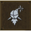 Advanced Pyrotechnics
{kind=link}
Damage dealt by a bomb’s explosion generates 0.1 Adrenaline Points.
| Points in branch needed to unlock: 0 |
Notes: You’re usually employing bombs at only limited points during your adventure. But if you’re lobbing explosives at foes more often than slaying with swords, give this ability a chance; the Adrenaline Points it helps generate (through damage; you must hurt a foe with a bomb!) helps you continue the fight. Note that bombs which explode into fragments, and therefore inflict more damage (and to multiple targets) generate more APs. However, it is usually better to utilize Combat abilities (as each gives an AP gain) instead.
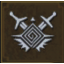 Battle Frenzy
Battle Frenzy
{kind=link}
Instead of its previous effect, Battle Trance now increases critical hit chance by 8% per Adrenaline Point.
| Points in branch needed to unlock: 0 |
Notes: Battle Trance is a branch of your Combat abilities, and each time you land a blow in combat, Adrenaline Points are generated. Each AP increases weapon damage by 10 percent. But with Battle Frenzy, each AP increases your critical hit chance by eight percent instead. This is helpful for character archetypes where your critical damage is large, but your chance of scoring a critical hit is low. Of course, you can also use it with characters that already have a higher chance to score critical hits, and almost guarantee a critical hit for each attack! Simply check to see how impressive your critical damage is first, so you’re maximizing this ability.
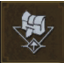 Strong Back
{kind=link}
Maximum inventory weight is increased by 60.
| Points in branch needed to unlock: 0 |
Notes: This is a helpful “spare” ability to purchase and utilize when you’re foraging, rather than preparing for a difficult battle. Before you choose it, think about the weight bonuses that adding Saddlebags to Roach gives you, and the items you can store in your Stash chests. If you still need more carry weight, pick this.
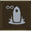 Gorged On Power
{kind=link}
The bonus from a chosen Place of Power lasts indefinitely – but one such bonus can be active at a given time.
| Points in branch needed to unlock: 0 |
Notes: Though this isn’t as useful as one of the three “Techniques” General abilities or Rage Management, having a permanent bonus from one of the Places of Power (which increases the intensity of one of your five Signs) is moderately beneficial. But remember you still have to equip this ability into a slot, so this takes away a bonus that may stack, or offer larger bonuses when partnered with a Mutagen (such as linking three Signs abilities together in your Character Menu). Also, with Fast-Travel you’re always less than 30 minutes away from a Place of Power to redraw the power from (30 minutes being the time the power normally lasts for).
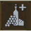 Balanced Diet
{kind=link}
Vitality Regeneration after eating lasts 20 minutes.
| Points in branch needed to unlock: 0 |
Notes: This affects any “Food” items only, such as dumplings and other goods found sold primarily by Innkeeps. Though helpful, there are much more potent potions to use during combat, and the simple act of Meditation restores Vitality once combat is over. However, if you lack potions and decoctions, and primarily use food during fights to increase your health, this is most helpful.
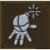 In Combat’s Fires
{kind=link}
You ignore bomb and special bolt effects.
| Points in branch needed to unlock: 0 |
Notes: One of the biggest drawbacks when using bombs or special bolts at close range, is being struck by shrapnel, or the after-effects of an explosion. This nullifies that completely, and is a reasonable choice for those wishing to engage foes (particularly crowds of bandits) in more brazen combat while juggling projectiles. The only negative of this ability, is the lack of obvious times when it helps you immeasurably (you can heal, or be more careful with your area-effect weapons instead), but it does help fighting using bombs in confined spaces, like dungeons.
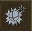 Heavy Artillery
{kind=link}
Bomb damage is increased by 200% – but the number of bombs in slots is decreased by 50%. This does not apply to bombs which deal no damage.
| Points in branch needed to unlock: 0 |
Notes: For any bomb causing pain on your foe, the number you carry is halved, but the damage is doubled. This allows you to drop a well-aimed bomb on a large enemy or group of foes, and really decimate them with a single strike. The downside is if you miss! In addition, as this takes up an Ability slot, you may find that lobbing two bombs of regular damage is just as effective (and doesn’t require you to purchase this skill). However, if you’re wishing to clear a battlefields of enemies with a single bomb, or wish your bombs did greater damage (and you end up having some left over after each combat), pick this skill, then augment it by working at your Corvo Bianco Alchemy Lab (when unlocked, which adds one to each bomb count), as well as Efficiency and Cluster Bombs from the Alchemy Tree that help increase your bomb number and potency, too.
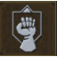 Relentless Attack
{kind=link}
Each defensive action generates Adrenaline Points: Parries 0.1 points, Counterattacks 0.4 points, Dodges 0.3 points, Leaps 0.2 points. Cannot be activated more than once every 5 seconds.
| Points in branch needed to unlock: 0 |
Notes: If you’re the type of Witcher who tends to try a more defensive strategy when facing bandits and monsters, and find you’re running out of Adrenaline Points, then give this ability a try. Though its biggest downside is its activation delay (once every five seconds), having a quicker regeneration of Adrenaline Points is always helpful. This allows you to use the enemy’s attacks against them; Countering and claiming almost half an AP at the same time! Obviously, Counters and Dodges are the best way to increase your AP with this Ability as they have the highest partial-point number, so focus on those instead of Parrying. This forces you to perfect Counters, and therefore keeps you effective in combat for longer. However, you may have other ways to keep your APs up, making this Ability unnecessary.
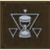 Sun And Stars
{kind=link}
During the day, Vitality regenerates by an additional 10 points per second when not in combat. At night, Stamina regenerates by an additional 1 point per second during combat.
| Points in branch needed to unlock: 0 |
Notes: This is useful to start with, and especially so when attempting the Blood and Broken Bones! Or Death March! difficulty modes. The additional boosts to health and Stamina regeneration can be the difference between success and failure. However, your Vitality can regenerate fully when you Meditate, and the time of day means this isn’t a constant regeneration of Stamina. A better plan is a fool-proof plan of purchasing abilities for a particular character archetype, and using Potions.
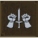 Adrenaline Burst
Adrenaline Burst
{kind=link}
Increases Adrenaline generation by 5%. Using Signs now generates Adrenaline Points.
| Points in branch needed to unlock: 0 |
Notes: Useful earlier rather than later into your adventure, this is mainly utilized by those investing heavily in Signs, in conjunction with the Rage Management General ability (which allows you to cast Signs using Adrenaline Points). Combat/Sign hybrids, who wish to use Ursine gear (with Adrenaline bonuses) but also employ Signs may also find this helpful. In the field, this simply allows you to cast Signs more frequently in combat. As you gain experience however, this becomes less helpful as your later Sign abilities tend to allow Stamina regeneration without the need for waiting, which is what this ability circumvents.
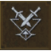 Focus
{kind=link}
Adrenaline Points increase both weapon damage and Sign intensity.
| Points in branch needed to unlock: 0 |
Notes: Adrenaline, under ideal circumstances, only gets used up when you make use of an ability that requires it. Focus allows Adrenaline that isn’t being used to increase your weapon damage and Sign intensity, effectively giving you free additional combat potential. It can also be combined with Battle Frenzy (a General ability listed previously) so that the Battle Trance passive bonuses are
applied, along with the ones for Battle Frenzy. Though there are ways to increase weapons damage and Sign intensity by other means (the Sign Branches’ “Intensity” abilities that can increase Sign Intensity by far more than Focus), this is worth considering.
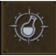 Metabolic Control
{kind=link}
Increases maximum Toxicity by 30 points.
| Points in branch needed to unlock: 0 |
Notes: If you’re drinking your own brews heavily and often, the extra points of Toxicity can mean the difference between using a White Raffard’s Decoction in a heated battle, or not. However, the Alchemy ability Acquired Tolerance is a better bet; in the long run this adds much more to your Toxicity level, and there are other benefits for having an almost maxed-out Toxicity sooner, such as Delayed Recovery.
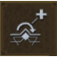 Survival Instinct
{kind=link}
Increases maximum Vitality by 500.
| Points in branch needed to unlock: 0 |
Notes: Though helpful in the early days of your adventuring, you should be focusing on abilities that stack with each other, and offer a constant regeneration of Adrenaline, Vitality, or Stamina. Simply adding to your health keeps you in fighting shape for longer, but think about investing your point into better sword skills or Sign abilities. Why not invest in Quen’s Exploding Shield instead? Improve your combat prowess so foes find it harder to whittle down your Vitality!
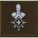 Bear School Techniques
Bear School Techniques
{kind=link}
Each piece of heavy armor increases the maximum Vitality by 5% and strong attack damage by5%.
| Points in branch needed to unlock: 0 |
Notes: If you are focusing on a character that uses the Strong Attacks from the Combat Branch of the Ability Tree, and also require a higher Vitality (which you can add more to using Green Mutagens), this is a key ability and utilized time and time again for those wanting to wear (and gain the added benefits of) Heavy Armor. This bonus can get extremely high, as there are four pieces of armor to wear (torso, gloves, trousers, and boots). Remember that the Runewright’s Glyphword “Heft” causes any armor to be treated as Heavy Armor, if you want to mix and match equipment but still use this bonus.
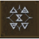 Rage Management
{kind=link}
If your current Stamina level is too low, Signs can be cast using Adrenaline Points.
| Points in branch needed to unlock: 0 |
Notes: This forms the foundation of many different archetypes, and should be seriously considered in almost every adventure. Partner this ability with other elements that increase your Adrenaline Points, such as Razor Focus or Ursine Witcher gear. Or Whirl, which actually generates Adrenaline Points! Then simply let rip with any and all Signs, and continue to cast (using Adrenaline) when your Stamina is depleted! With a number of methods of maintaining a reservoir of Adrenaline, you may never run out of Sign power again! Feel free to continuously light foes on fire with Igni, or cause damage while defending yourself with Quen Active Shield, with fewer worries about lacking Sign-casting capabilities. This is tremendous help for hybrid or Signs archetypes, and even pure Combat builds benefit (as you should have a healthy Adrenaline Point regeneration, allowing both swordplay and Signs without rest!).
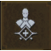 Griffin School Techniques
{kind=link}
Each piece of medium armor increases Sign intensity by 5% and Stamina regeneration by 5%.
| Points in branch needed to unlock: 0 |
Notes: Are you wearing Medium armor (or using the Glyphword “Balance” that allows any armor to be treated as Medium armor)? Does your character specialize primarily in magic that requires an impressive Sign intensity and Stamina regeneration? Then this is a must-have ability! Choose this as soon as possible, then find four pieces of medium armor (torso, gloves, trousers, and boots) to wear. This offers large and easy to obtain bonuses and should be the cornerstone of a mage-style archetype.
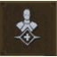 Cat School Techniques
{kind=link}
Each piece of light armor increases critical hit damage by 25% and fast attack damage by 5%.
| Points in branch needed to unlock: 0 |
Notes: If you’re utilizing a Combat-centric archetype and paying particular attention to Fast attacks, as well as scoring critical hits, then this is an exceptional ability, and the cornerstone of a build. It offers immediate and multiple bonuses (with only one ability point expended!), as long as you’re clad in Light Armor, such as the Feline torso, gloves, trousers, and boots. Alternatively, have the Runewright enchant the Levity Glyphword, turning any armor you’re wearing into Light Armor, which also enables this ability.
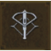 Steady Shot
{kind=link}
Crossbow bolts deal 25% more damage.
| Points in branch needed to unlock: 0 |
Notes: You may find partnering the Marksmanship Combat Abilities, which also augment your crossbow, more helpful as you can place them with Combat Abilities for Mutagen bonuses, whereas this is a stand-alone ability. While it’s helpful to tag a foe at range in fewer hits, especially when using bolts that you only have a finite supply of, the fact that there’s an infinite supply of bolts means shots may not need to count in most situations. If you want to be the ultimate huntsman though, this is a good ability to add.
The Witcher® is a trademark of CD PROJEKT S. A. The Witcher game © CD PROJEKT S. A. All rights reserved. The Witcher game is based on a novel by Andrzej Sapkowski. All other copyrights and trademarks are the property of their respective owners. Learn more at thewitcher.com.